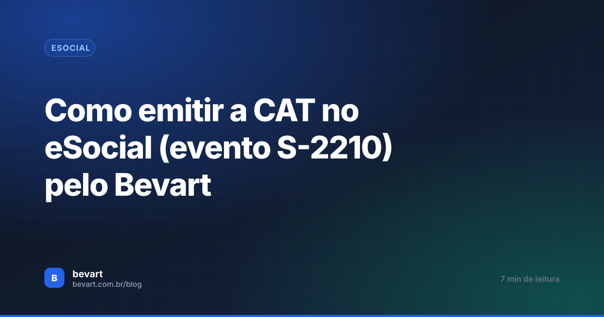

Como emitir a CAT no eSocial (evento S-2210) pelo Bevart
O prazo é curto e o formulário é longo. Veja o que precisa estar pronto antes, como preencher cada bloco e como acompanhar o recibo que comprova a comunicação.

O essencial em 30 segundos
- Antes de abrir a CAT: procuração digital ativa e certificado cadastrado como transmissor.
- Dois campos definem o destino do envio: Documento (original ou retificação) e Ambiente (produção).
- Só está comunicado quando o status chega em Validado, com recibo — protocolo não é recibo.
A comunicação de acidente de trabalho tem o prazo mais apertado dos eventos de SST: até o primeiro dia útil seguinte ao acidente e, em caso de óbito, imediatamente. Isso significa que a CAT quase sempre é preenchida com pressa, muitas vezes por quem não abre esse formulário todo dia.
O roteiro abaixo cobre o formulário inteiro, bloco a bloco, e o que conferir depois do envio.
Antes de começar
- A empresa fez a procuração digital para o seu certificado.
- Conta ativa no sistema.
- Certificado digital cadastrado como transmissor.
Sem esses três, o formulário até é preenchido, mas a transmissão falha — e o prazo corre.
Abrir a CAT
Vá em Painel eSocial → S-2210 (CAT) e clique em Abrir Nova CAT.

Preenchendo o formulário
1. Informações iniciais
Cadastre ou selecione empresa, unidade, setor, função e funcionário. Dois campos merecem atenção:
- Documento: "Original" no primeiro envio; "Retificação" quando estiver corrigindo uma CAT já transmitida.
- Ambiente: "Produção" para o envio valer oficialmente.

2. Detalhes do ocorrido
Data, hora, tipo e circunstâncias do acidente. É o bloco que exige a informação de quem esteve no local — vale colher os detalhes antes de sentar para preencher.

3. Local do acidente
Indique onde aconteceu. Se foi fora do ambiente da empresa, informe o CNPJ do local — caso comum em acidente de trajeto ou em serviço prestado na instalação de terceiro.

4. Parte do corpo atingida

5. Dados do médico
Identifique o profissional que emitiu o atestado — cadastrado no sistema ou informado manualmente.

6. Atualização de CAT anterior
Quando a CAT precisa ser atualizada — o caso mais comum é o óbito do trabalhador após o acidente — informe o recibo da CAT anterior. É isso que mantém o histórico encadeado em vez de criar dois registros soltos.
Prazo curto pede formulário pronto
Empresa, trabalhador, setor e função já vêm do cadastro. Você preenche o que só quem viu o acidente sabe — e transmite.
Criar conta grátisEnviar
Duas saídas: salvar e enviar para o eSocial, com transmissão direta, ou baixar o XML para envio por outro caminho.
Acompanhar o status
No painel, busque pela empresa. O status avança em três etapas:
| Status | O que significa |
|---|---|
| Processando envio | O evento saiu do sistema e aguarda o eSocial |
| Enviado | Recebido, com protocolo — ainda não é confirmação |
| Validado | Aprovado e cadastrado, com recibo: aqui sim está comunicado |

Dar a CAT por concluída no status "Enviado". Se o evento for rejeitado depois, a comunicação não existe — e o prazo legal continua correndo. Só encerre a tarefa quando aparecer o recibo.
Relatório da CAT
Na coluna de ações, clique em Relatório CAT, informe o recibo (sem pontos), resolva o CAPTCHA e gere o comprovante.

Comunicar não é tratar. Todo acidente deveria voltar ao inventário de riscos: o perigo estava mapeado? A medida existia? Foi eficaz? CAT sem revisão do PGR é a mesma condição esperando repetir.
Perguntas frequentes
Qual o prazo para enviar a CAT?
Até o primeiro dia útil seguinte ao acidente. Em caso de óbito, a comunicação é imediata.
Preciso emitir CAT mesmo sem afastamento?
Sim. A comunicação é devida em acidente típico, de trajeto e em doença ocupacional, inclusive quando não há afastamento do trabalhador.
Enviei com erro. Como corrijo?
Abra uma nova CAT com o tipo de documento "Retificação", referenciando o envio anterior. O sistema mantém o histórico encadeado pelo recibo.
Qual a diferença entre protocolo e recibo?
O protocolo indica que o evento foi recebido para processamento; o recibo confirma que o eSocial validou e cadastrou a CAT. A comunicação só está completa com o recibo.